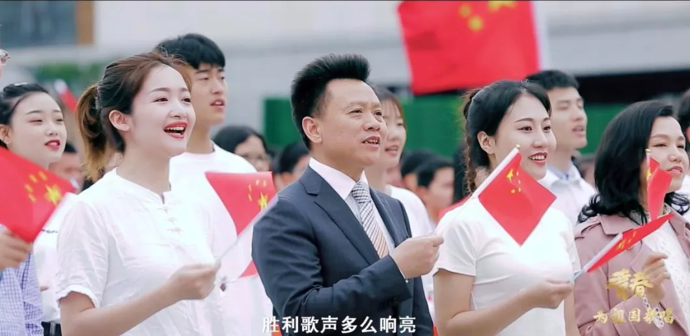

庹先国
个人简介：庹先国，男，湖南澧县人，1965年11月出生，博士，教授、博导。1988年7月参加工作，1986年5月加入中国共产党。本科就读成都地质学院放射性物探专业，在成都理工学院核技术应用专业获硕士和博士学位，中国地质大学（北京）博士后，英国诺丁汉大学访问学者。曾任成都理工大学科技处副处长、网络教育学院院长、核技术与自动化工程学院院长等职；
| 工作时间 |
职务 |
| 2012年4月至2016年1月 |
西南科技大学党委常委、副校长 |
| 2016年1月至2018年12月 |
四川理工学院校长、党委副书记 |
| 2019年1月起 |
四川轻化工大学校长、党委副书记 |
中国白酒学院院长（中国酒业协会） |
荣获称号
曾获得国家杰出青年科学基金，入选“新世纪百千万人才工程”国家级人选、教育部首批“新世纪优秀人才支持计划”、四川省学术和技术带头人，先后获得“中国青年科技奖 ”、“金锤奖”、“侯德封矿物岩石地球化学青年科学家奖”和“四川省优秀创业人才”称号，享受国务院政府特殊津贴。四川省委省政府聘任的“省委、省政府决策咨询委员会”委员，国家自然科学基金委多届评审组委员。作为团队负责人入选首批“四川省青年科技创新团队”（核退役与核废物处置）。
- 在核技术应用领域长期从事核分析技术理论、核地球物理勘探方法、核电子学仪器的研制和相关技术的研究工作；在资源环境领域长期从事辐射环境评价、核素迁移、环境监测与灾害预警方法及配套仪器仪表的研制工作；在人工智能领域长期从事白酒智能化酿造、特殊环境机器人等技术研究及装备研制工作。
- 先后主持国家自然科学基金重大科研仪器设备研制专项、科技部重大科研仪器设备专项、国家杰出青年科学基金、国家863计划项目、国防科工局重大专项、国家自然科学基金重点项目、国家自然科学基金面上项目、教育部博士点基金等国家级课题30多项。
- 研究成果获得省部级一等奖4项、二等奖8项，在国内外学术期刊和会议上发表论文200余篇，获授权国家发明专利14项，软件著作权6项；已指导博士后2名、博士研究生30余名、硕士研究生100多名。